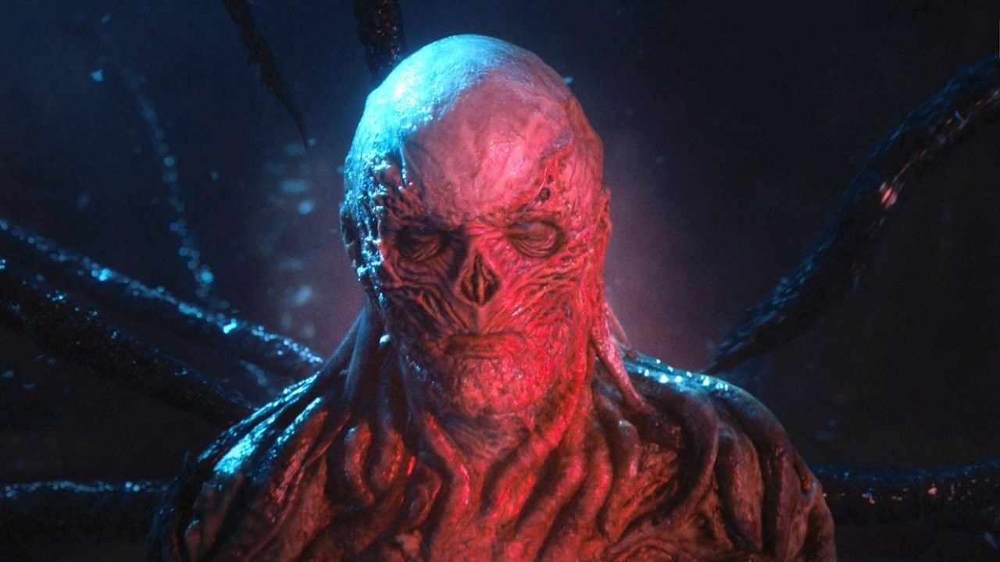

O Mundo Invertido
O Mundo Invertido é quase como uma cópia do mundo real, porém com monstros horripilantes, escuridão e uma energia sombria. Dizem que um grande comandante governa esse reino paralelo e deseja trazer caos ao mundo real.

Stranger Things Temp. 04
Mais experientes, os heróis de Stranger Things também precisam enfrentar desafios maiores do que nunca e fazer decisões que vão mudar suas vidas para sempre. Confira ao lado o trailer da quarta temporada.
Uma das séries mais assistidas da Netflix
- 
-

-

Clube D&D
Lutar ou fugir? Morrer como um herói ou escapar para viver? A jornada para deter Vecna é repleta de caminhos obscuros que só você e sua equipe podem iluminar. Se tiver coragem e disposto a arriscar tudo, tente a sorte no clube de D&D de Hawkings e veremos se rodar o D20 é apenas sorte de principante ou não...